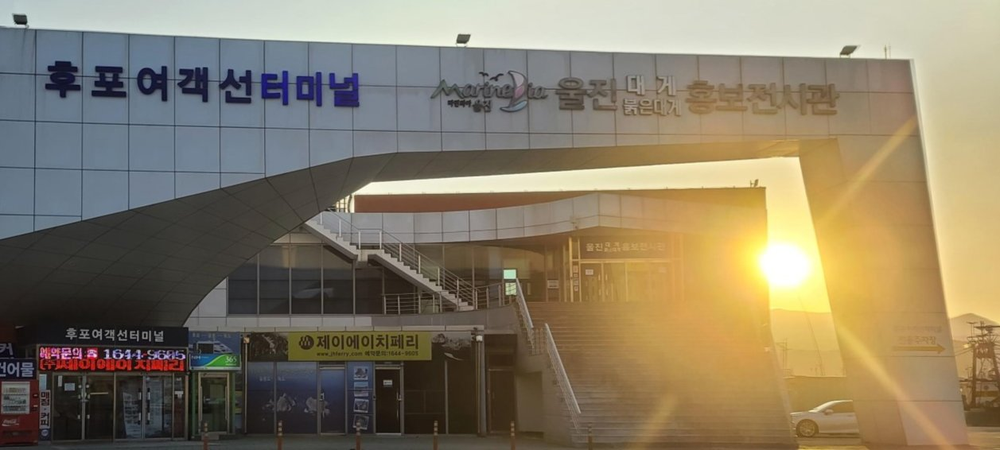
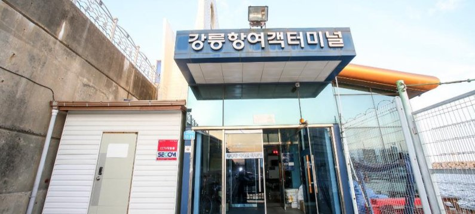
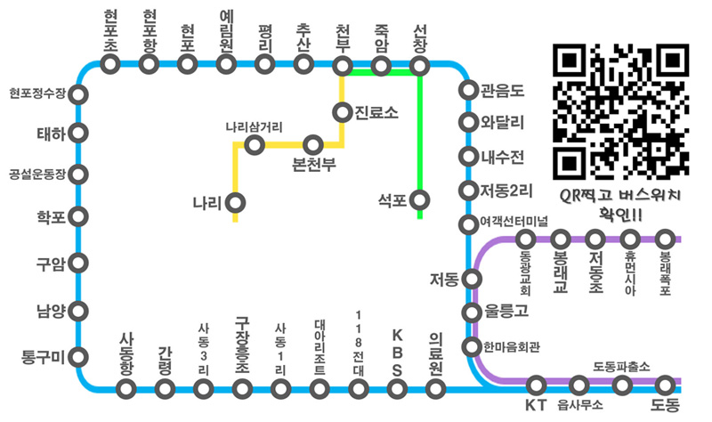

울릉도로 가시는 방법
이용시 주의사항
기상변화에 따라서 운행시간이 조정될수가 있음
배 내부에서는 멀미약을 구매하는 것이 불가함
-
포항-울릉
-
목호-울릉
-
씨스포빌JD-씨스타1 호

목호항여객터미널 항로 선박명 승선인원 육지출항 울릉출항 소요시간 연락처 홈페이지 목호-울릉(도동) 씨스타 1호 443명 08:00 12:30 약 2시간 40분 1577-8665 홈페이지 링크
-
-
후포-울릉
-
에이치해운-울릉 썬플라워 크루즈호
 후포여객선터미널 항로 선박명 승선인원 육지출항 울릉출항 소요시간 연락처 홈페이지 후포-울릉(사동) 울릉 썬플라워 크루즈호 628명 08:30 15:30 약 4시간 30분 1644-9605 홈페이지 링크
-
-
강릉-울릉
-
씨스포빌 여객-씨스타 5호
 강릉항여객터미널 항로 선박명 승선인원 육지출항 울릉출항 소요시간 연락처 홈페이지 강릉-울릉(저동) 씨스타 5호 438명 08:00 13:00 약 3시간 1577-8665 홈페이지 링크
-
울릉도 내에서의 교통
-
버스
-
버스노선표&버스요금  구분 일반 중고생 초등생 단일구역 내지역
(읍면내 이동)1000 600 500 단일구역 외지역
(읍면간 이동)1500 600 500 - 버스 노선표
- 동절기, (비)성수기에 따라서 일정이 변동될 수 있음
- 차량 번호에 따라서 섬을 도는 방향이 달라짐(홀수: 시계방향, 짝수: 반 시계방향)
- 배차 간격이 약 1시간정도
-
-
택시
- 울릉도의 경사가 많은 지형때문에 주로 suv 차량들이 많다
-
렌터카
- 아직 도로가 완벽하게 정리된 상태는 아니여서 일부 길들이 운전 초보에 게는 힘듬
-
도로에 중앙차선이 없고 신호가 거의 없어서 힘들수 있음
-
업체명 업체 연락처 울릉도렌트카(주)
054-791-1881, 010-4220-1881 독도렌트카(주)
054-791-7808, 010-6414-2506 울릉도공항렌트카(주)
054-791-4747, 010-3539-4259 (주)콜렌트카
054-791-2666, 010-9956-2244 (주)오케이렌트카
054-791-0029, 010-9662-0029 (주)한진렌트카
054-791-5337, 010-2801-9929 (주)현대렌트카
054-791-7880, 010-3038-1318 (주)명가렌트카
054-791-2266, 010-4807-7797 (주)경일렌트카
054-791-1747, 010-4114-2211
-
관광버스
-
순번 업체명 연락처 1 (주)울릉관광
054-791-0066 2 (주)울릉도개발관광여행사
054-791-6866 3 (주)마리나관광여행사
054-791-0020 4 (주)호명관광여행사
054-791-1717 5 (주)울릉도항공여행사
054-791-0585 6 울릉두레관광주식회사
054-791-9696 7 (주)일광여행사
054-791-7878 8 (주)문화관광
054-791-0043 9 울릉전세버스협동조합
054-791-9151 10 (주)우산국투어
054-791-3636
-